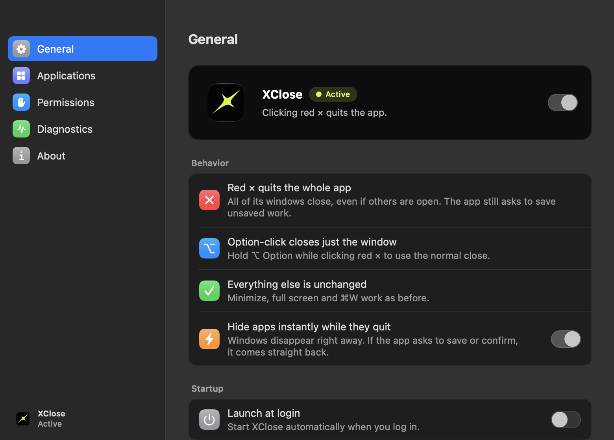
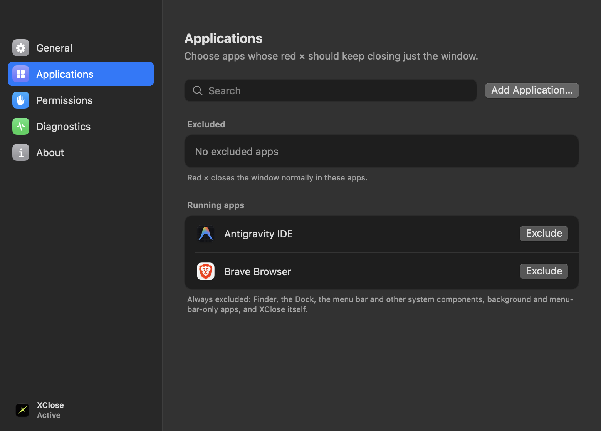
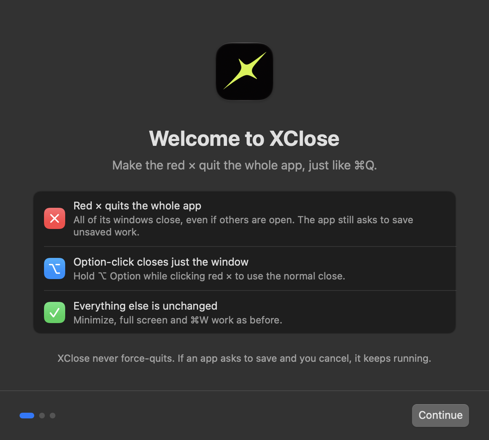
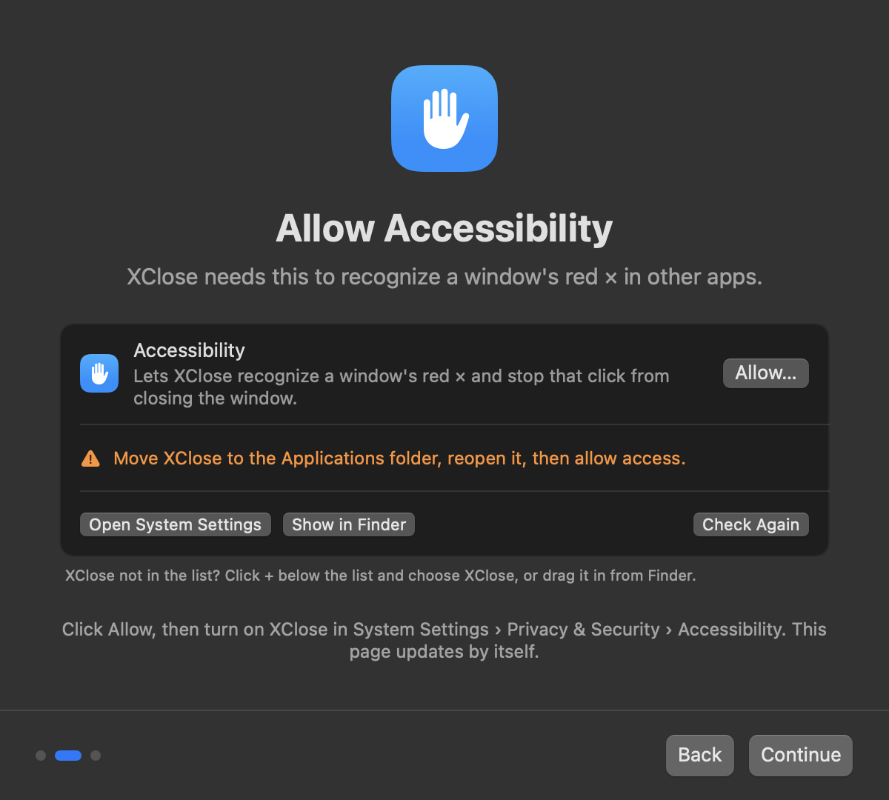

XClose is a tiny menu-bar utility for macOS. Click any window's red close button and the whole app quits — exactly like pressing ⌘Q.

On a Mac, closing the last window usually leaves the app running. XClose makes the red × do what you meant, and stays out of the way.
All of its windows close, even ones in the background. It's the same request as Quit, sent to the app you clicked.
Hold Option while clicking red × for the normal close. Minimize, full screen and ⌘W are untouched.
Apps still ask to save, and Cancel keeps them running. XClose never force-quits or clicks through dialogs.
Windows vanish the moment you click while the app finishes quitting in the background. It comes back if it needs you.
Keep the old behavior where you want it. Finder and system components are always excluded.
No account, no analytics, about 0% CPU at rest. The only network use is an optional daily update check.
XClose updates itself after the first install.
Open XClose.dmg and drag XClose into your Applications folder.
The first time, macOS may say it can't verify the developer. Open System Settings › Privacy & Security, scroll down and click Open Anyway.
XClose guides you to turn it on in Privacy & Security › Accessibility. That's the only permission it needs.
xattr -dr com.apple.quarantine /Applications/XClose.appXClose lives in the menu bar. Pause it in one click, exclude apps, and check exactly what it does in Diagnostics.



No. XClose sends the same quit request as ⌘Q. Apps show their usual "Save changes?" prompt, and if you click Cancel the app keeps running.
Any app with standard macOS window controls: AppKit, SwiftUI, Catalyst, Electron (VS Code, Slack, Discord), Chrome, Safari, Java apps and more. Apps that draw their own window buttons keep their normal behavior. Panels, dialogs and sheets only close, as before.
To recognize a window's real close button under your click and to stop that one click from just closing the window. XClose only looks at the button you click in a title bar. It never reads window contents, titles or keystrokes.
No. There's no account and no analytics. If automatic updates are on, XClose fetches a small update feed from this site once a day. No personal information is sent, and you can turn it off in Settings.
Click the XClose icon in the menu bar and choose Pause or Quit. Normal red × behavior returns immediately.
Quit XClose from its menu, then drag it from Applications to the Trash. Optionally remove it from System Settings › Privacy & Security › Accessibility. It installs nothing else.